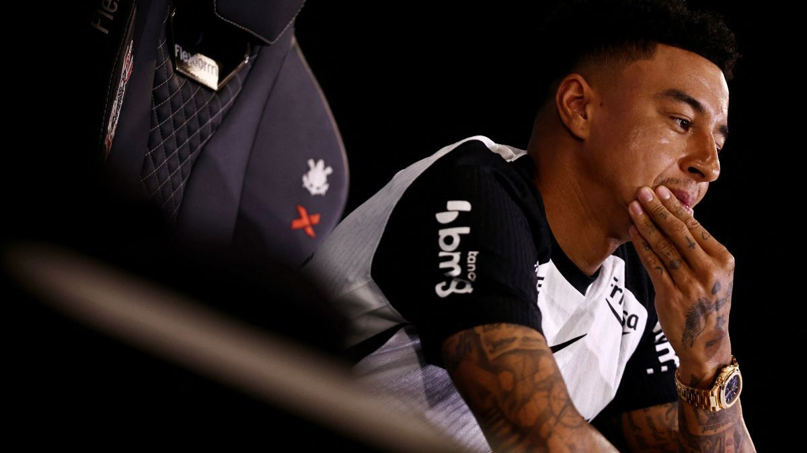

Vai Corinthians
maior do mundo

Lingard contratado fi
Lingard is already working with the ball, but he has not yet been cleared for unrestricted training at CT Joaquim Grava. The new No 77 was officially presented last week and expressed delight at signing for the São Paulo club. He said he is ready to take the field for his new team. This month, Corinthians visit Chapecoense on Thursday, then face Flamengo at Neo Química Arena on 22 March.

Ano novo Corinthians (???)
O Ano Novo chega como promessa de renovação e esperança. Textos de Ano Novo emocionam porque traduzem em palavras o que o coração sente: vontade de recomeçar, de ser melhor e de acreditar em dias mais justos e felizes. É tempo de gratidão, reflexão e coragem para abrir novos caminhos.
Zebra corinthiana
Na prática, a zebra é um animal branco com listras pretas, segundo especialistas e biólogos. Mesma cor do Corinthians !!!